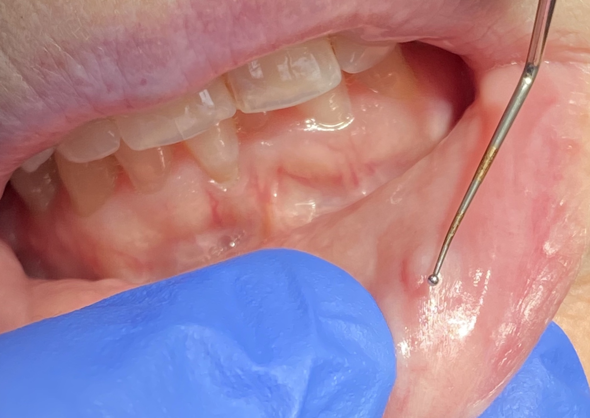
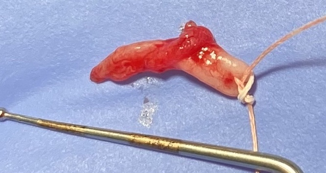
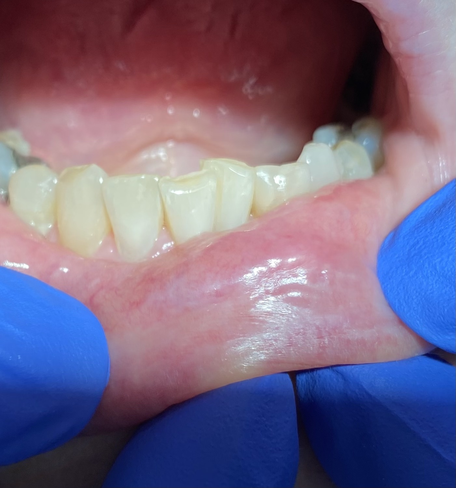

Calibre Persistent Artery Biopsy - March 17, 2023
A 76 y/o female with background of hypertension, taking aspirin, attended for a lump on lower lip. On examination, the lump was located on lower labial mucosa on the LHS near vermilion zone, approx 4mm in diameter, not fixed to the underlying tissue, not ulcerated.
Differential disgnosis include mucocele, mucous retention cyst, lipoma and hyperplastic polyp.
Patient reported that the lesion has been present for several years, has not changed in apperance, not painful, and occasionally biting on the lump. Patient cannot recall any specific incident that could lead to the lesion formation.
Excisional biopsy was performed under patient request. A single incision was made at the base of the lesion at the location nearest to the vermillion border. Blunt disection was performed with scissors, lesion extruded through incision with blunt disection. Vicryl 3-0 suture was place through lesion to aid in removal and stability.
Lesion was removed, no significant bleeding considering history of taking aspirin. 3 simple suture with Vicryl 3-0 were placed for primary closure, the spicemen was fixated in 10% formalin and sent for histopathology analysis and diagnosis.
2 weeks later, biopsy report received, an interesting result was found. Microscopically, a large vascularised artery and small amount of surrounding fat with small nerve bundles and blood vessles were observed. The features are in keeping with calibre persistent artery.
Patient was reviewed in the same appointment, she reported that biopsied area felt "lumpy". On exmination, soft tissue healed as expected, a fixed, firm, raised tissue of size and shape consistent with biopsy incision was observed, coral pink in colour. Patient was informed and explained the diagnosis, infromed paitent that the lumps she feels is likely scar tissue. Instructed patient to massage with gentle finger pressure every day to encourage collegan spreading, and self monitor for any further concerns.
